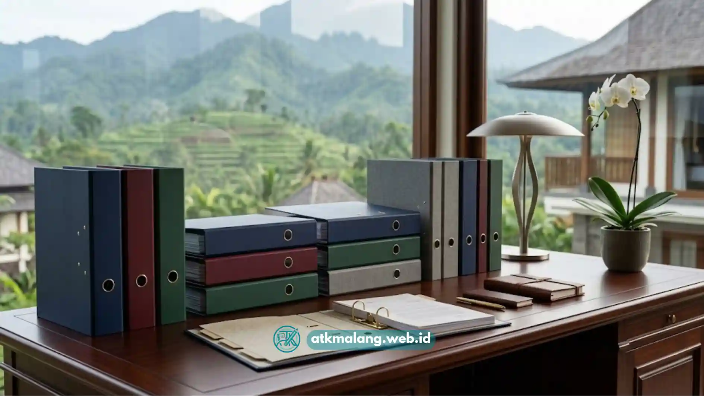

Musim pelaporan pajak sering kali menjadi momen paling menegangkan bagi bagian administrasi dan keuangan perusahaan.
Bukan hanya soal angka yang harus akurat, tetapi juga soal bagaimana ribuan lembar bukti potong, faktur, dan laporan bisa ditemukan dalam hitungan menit saat petugas audit datang.
Di sinilah pemilihan map ordner bantex malang yang tepat menjadi keputusan strategis, bukan sekadar belanja Alat Tulis Kantor biasa.
Map yang jebol di tengah proses penyusunan arsip, atau tuas pengunci yang macet saat dibuka, bisa membuat satu ordner penuh dokumen berantakan dalam sekejap dan itu adalah risiko yang tidak perlu ditanggung perusahaan mana pun.
Daftar Isi
Pentingnya Memilih Map Ordner Berkualitas untuk Dokumen Pajak
Dokumen pajak bukan kertas biasa. Ia harus disimpan bertahun-tahun, sewaktu-waktu diambil untuk keperluan audit, dan tidak boleh rusak akibat kelembapan atau tekanan fisik dari tumpukan berkas lain di rak arsip.
Memilih map ordner bantex malang terbaik untuk arsip pajak memerlukan verifikasi pada kekuatan tuas pengunci cincin logam anti-karat, ketebalan bahan karton laminasi PVC anti-lembab, serta kerapatan celah folder pelindung debu.
Tiga elemen di atas tuas logam, laminasi PVC, dan kerapatan folder bukan sekadar fitur tempelan pada kemasan. Ketiganya adalah penentu apakah ordner Anda akan bertahan lama.
Mengapa Tuas Cincin Logam Sering Menjadi Titik Lemah
Keluhan paling umum yang kami terima dari klien B2B bukan soal warna atau ukuran map, melainkan tuas pengunci yang jebol.
Ordner murahan biasanya menggunakan pelat logam tipis dengan lapisan pelindung karat yang minim. Setelah beberapa bulan dibuka-tutup untuk menambah bukti transaksi baru, engsel logamnya mulai kendur.
Bahkan bisa patah dan begitu itu terjadi, seluruh lembar dokumen berisiko berhamburan. Pastikan membeli map ordner dengan tuas berkualitas.
Laminasi PVC dan Tantangan Kelembapan Kota Malang
Malang dikenal dengan udara yang sejuk namun cenderung lembap, terutama saat musim hujan. Kondisi ini menjadi musuh utama karton arsip yang tidak dilapisi dengan baik.
Karton tanpa laminasi PVC menyerap kelembapan udara, melunak, dan lama-kelamaan melengkung sehingga tidak lagi berdiri tegak di rak arsip.

Tumpukan map ordner siap memenuhi kebutuhan kearsipan.Standar Pengujian Kekuatan Map Ordner ala Tim Logistik ATK Malang
Sebagai pihak yang menangani distribusi ribuan unit Alat Tulis Kantor setiap bulannya, tim logistik kami menerapkan pengecekan kualitas sebelum produk dikirim ke pelanggan korporat.
Beberapa parameter yang kami perhatikan meliputi:
- Uji ketahanan engsel logam: Di mana tuas pengunci dibuka-tutup secara berulang hingga mendekati 500 kali untuk memastikan pegas logam tidak melemah atau berkarat pada titik lipatan.
- Uji ketahanan laminasi PVC: Dengan memeriksa apakah lapisan permukaan karton tetap rekat dan tidak menggelembung setelah terpapar kondisi udara lembap khas Malang Raya.
- Uji efisiensi sistem penulisan: Memastikan permukaan punggung ordner cukup halus untuk ditulisi manual maupun ditempeli label cetak tanpa mudah terkelupas.
Proses semacam ini penting agar setiap unit map ordner Bantex yang kami distribusikan benar-benar layak digunakan untuk kebutuhan arsip jangka panjang, bukan hanya terlihat rapi di rak pajangan toko.
Tabel Perbandingan Spesifikasi Map Ordner untuk Arsip Pajak
Agar tim pengadaan Anda lebih mudah menentukan pilihan, berikut perbandingan tiga tipe map ordner yang paling sering digunakan untuk kebutuhan arsip pajak dan keuangan korporat.
| Tipe Map Ordner | Ketebalan Bahan | Kapasitas Lembar (70–80 gsm) | Sistem Pengunci | Rekomendasi Kegunaan |
|---|---|---|---|---|
| Bantex PVC Folio 7cm | Karton tebal + laminasi PVC dua sisi | ± 600–700 lembar | Rado Lock System, tuas logam anti-karat | Arsip pajak tahunan bervolume besar, laporan keuangan lengkap |
| Bantex PVC Kwarto 5cm | Karton sedang + laminasi PVC | ± 400–450 lembar | Rado Lock System, tuas logam standar | Arsip bukti potong pajak bulanan, dokumen SPT per periode |
| Map Ordner Ekonomis Karton | Karton polos tanpa laminasi | ± 350–400 lembar | Tuas logam tipis, tanpa lapisan anti-karat | Arsip sementara, dokumen non-krusial jangka pendek |
Untuk kebutuhan arsip pajak yang bersifat jangka panjang dan wajib disimpan sesuai ketentuan perpajakan, tipe Bantex PVC Folio 7cm dan Kwarto 5cm jauh lebih disarankan dibanding varian ekonomis.
Mengingat risiko kerusakan pada arsip krusial dapat berdampak pada kelancaran proses audit di kemudian hari.
Tips Menyusun Sistem Kearsipan Pajak yang Siap Audit
Selain memilih map ordner yang tepat, sistem penataan arsip juga menentukan seberapa cepat tim Anda dapat menemukan dokumen saat dibutuhkan. Beberapa praktik yang kami rekomendasikan kepada klien korporat di Malang Raya:
- Kelompokkan dokumen berdasarkan jenis pajak (PPh, PPN, bukti potong) dalam ordner terpisah, bukan dicampur dalam satu map besar.
- Gunakan label punggung yang konsisten, mencantumkan periode bulan dan tahun agar mudah diurutkan di rak.
- Simpan ordner pada rak dengan sirkulasi udara baik untuk menghindari kelembapan berlebih, terutama di ruang arsip lantai bawah.
- Lakukan rotasi pengecekan kondisi fisik map secara berkala, minimal setiap enam bulan, untuk mendeteksi tuas yang mulai melemah sebelum benar-benar patah.
Kenapa Membeli dalam Skema Grosir Lebih Menguntungkan
Bagi divisi purchasing atau bagian umum perusahaan, membeli map ordner secara grosir bukan hanya soal harga per unit yang lebih murah, tetapi juga soal kepastian stok.
Kehabisan ordner di tengah musim pelaporan pajak bisa mengganggu jadwal kerja tim keuangan. Pentingnya ketersediaan stok yang konsisten, terutama menjelang tenggat pelaporan SPT Tahunan maupun masa pajak bulanan.
Map ordner mungkin terlihat sebagai kebutuhan alat pengarsipan kantor yang sederhana, namun perannya dalam menjaga integritas dokumen pajak perusahaan sangat besar.
Investasi pada map ordner Bantex berkualitas dengan tuas logam kokoh dan laminasi PVC tahan lembap akan menghemat waktu, tenaga, dan risiko kehilangan dokumen penting saat dibutuhkan mendesak, seperti saat pemeriksaan pajak berlangsung.